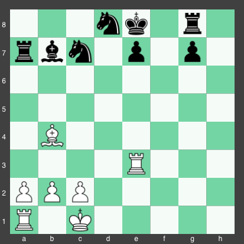

The student of chess cannot advance to a master of chess unless they understand how to create opportunities to set up favourable positions for themselves. The creation of these opportunities is known as tactics, and will be discussed extensively in this section.
If you would like to jump to a given tactic, click on one of the links below. Otherwise, you can follow the order provided, which lists tactics from easiest to most complicated.
Forks Skewers Pins Discovered Attacks Double Checks WindmillsA fork occurs when one piece attacks multiple pieces at the same time. A fork often happens with a bishop or knight, but it can also happen with a rook or even with a pawn! In the diagram below, black's bishop is forking white's two rooks. As a result, on black's next turn the bishop will capture one of white's rooks.
In a skewer, a piece threatens a high value piece, forcing it to move out of the way, allowing the capture of a lower ranking piece that was behind the valuable piece. Skewers can happen on a diagonal (with queens and bishops administering the skewer) or on a row or column (if a queen or rook is administering the skewer).
In this example, white's bishop is skewering the black queen and rook. Once the queen moves out of the way to avoid capture, white can simply take the black rook on their next turn
In a pin, a piece is prevented from moving because doing so would expose another more valuable piece to capture. There are two types of pins: relative pins and absolute pins. In a relative pin, a piece exerts a pin on another piece, but that piece could still move if the other player wanted (even though the piece behind it could then be captured). An example of this would be if moving a white pawn forward would allow the black bishop to capture white's queen. White could move their pawn if they wanted (though it's ill-advised).
When a piece is in an absolute pin, however, it does not have the luxuary of movement. This occurs when a piece is trapped on a line between the king and the attacking piece, since moving the piece would put the king in check, which is an illegal move.
In the diagram above, white has just captured one of black's rooks with his bishop. Material is now equal at 5 points per player, and everything appears to be going alright for white.
Suddenly, the roof caves in. Black plays rook to b8, pinning the bishop to the king in an absolute pin. White is now doomed to lose their bishop on the next turn no matter where they move. Faced with no better options, white now plays his best possible move: resigning.
In a discovered attack, the movement of a piece causes a different piece to now be attacking something (when before, the piece that just moved had been blocking this attack). If the discovered attack is a check, then it is referred to as a discovered check, and can be an especially powerful tactic.
In this position, it's white's turn to move. Down 5 points with very few pieces left on the board, the position looks bleak for white. However, in one move, white can turn it all around. White plays the stunning move pawn to f5, which creates a discovered check from the bishop (which is now attacking the king). While this is occurring, the pawn is attacking the queen. Black is now the one in a horrible spot. He can either move his king and lose his queen on the next turn, or he can move his queen into the diagonal of the bishop, at which point black can simply capture the queen with his bishop. After the queen is taken, white can force the promotion of his pawn to a queen using his bishop, and can then easily checkmate his opponent. What a turnaround!
The double check is an extraordinarily powerful attack, likely the second strongest tactic in all of chess! In a double check, two pieces check the enemy king simultaneously. Because the king has to get out of check by the end of his next move, he cannot block the check by moving a piece or by capturing a piece (assuming that neither of the checking pieces is hanging on a square adjacent to the king) since the other piece would still be checking him after that. As such, the king has no choice but to move to another square, often allowing for further checks or for the capture of a piece.
In this game, black appears poised to capture either white's knight or white's bishop on the next move, and to leave white down in material. Black laughs as he sees the predicament that his opponent has fallen into. A victory now would be almost impossible! Without missing a beat, white plays knight to e5! Confused, black starts to move his hand to play rook takes knight, but realizes in horror that he is in a double check from the knight and the bishop. He now has no choice but to move his king. After king to f6, white plays knight takes queen, leaving his opponent to hang his head in shame, and then to sheepishly resign.
At last, we arrive at the most powerful tactic in all of chess: the windmill! The windmill consists of a regular check followed by a discovered check, which keep alternating back and forth as the side performing the checks captures many enemy pieces. Sounds confusing, right? Fortunately, the simple example below can illustrate what the windmill is all about.
In this example, black starts off ahead by 5 points. However, that won't stay the case for very long. White launches a windmill with rook takes e7. Black's only legal move now is king to f8. After this, white takes c7 with his rook, simultaneously creating a discovered check with the bishop, and forcing the king back to e8. From here, the rook can move back to e7 to check the king, followed by rook takes b7 (repeating the previous cycle). After the king moves to get out of the discovered check, white can now play rook takes a7, taking out a pawn, a knight, a bishop, and a rook, all without losing any pieces! White now has a commanding 6 point lead, and black can only stare dazed in confusion, wondering what vortex captured all of his pieces.
Tactics make up both the heart and soul of chess. At the foundation of every great attack and every trap lies the tactic. The more you study, the better you'll get, so make sure you review this page until you master all 6 of the basic tactics listed here.
© Vygovsky enterprises | www.ChessExpert.com | 1999-2018